단원
1
2
3
4
5
6
놀이 시작
놀이 방법
놀이 방법
- 단원과 출제 문항 수를 정합니다.
- 15초의 제한 시간 동안 학생들은 문제의 O,X를 몸으로 나타냅니다.
- 모든 학생들이 답을 나타내면 선생님은 정답을 확인합니다.
- 문제를 틀린 학생은 탈락하고, 맞힌 학생은 다음 문제를 풉니다.
- 모든 학생이 문제를 다 풀지 못하고 탈락했을 경우,
 를 이용하여 퀴즈를 초기화 합니다.
를 이용하여 퀴즈를 초기화 합니다. - 끝까지 문제를 다 푼 학생의 이름을 입력합니다.
15
850보다 200 더 작은 수는 650입니다.
652-218=434입니다.
도형에 있는 두 수를 더하면 558입니다.
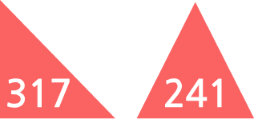
도형에 있는 두 수를 빼면 226입니다.
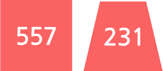
350보다 210 더 작은 수는 150입니다.
안에 알맞은 수는 419입니다.
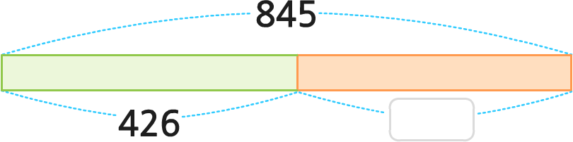
650+200과 325+525의
계산 결과는 850으로 같습니다.
계산 결과는 850으로 같습니다.
552+324는 228입니다.
600보다 250 더 큰 수는 950입니다.
수 모형을 모두 더하면 465입니다.
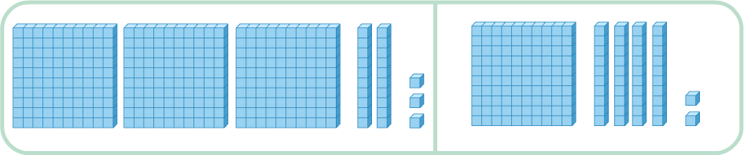
두 점을 곧게 이은 선을 선분이라고 합니다.
점 ㅁ과 점 ㅂ을 지나는
직선을 직선 ㅁㅂ 또는
직선 ㅂㅁ이라고 합니다.
직선을 직선 ㅁㅂ 또는
직선 ㅂㅁ이라고 합니다.
점 ㄱ에서 시작하여 점 ㄴ을
지나는 반직선을 반직선 ㄴㄱ
이라고 합니다.
지나는 반직선을 반직선 ㄴㄱ
이라고 합니다.
한 점에서 그은 두 반직선으로
이루어진 도형을 각이라고 합니다.
이루어진 도형을 각이라고 합니다.
각의 꼭짓점은
점 ㄴ입니다.
점 ㄴ입니다.
각을 읽을 때는
각의 꼭짓점이 가운데에 오도록 읽습니다.
각의 꼭짓점이 가운데에 오도록 읽습니다.
그림과 같이 종이를 반듯하게 두 번 접었을 때
생기는 각을 직각이라고 합니다.
생기는 각을 직각이라고 합니다.
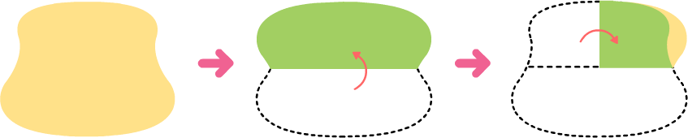
세 각이 모두 직각인 삼각형을
직각삼각형이라고 합니다.
직각삼각형이라고 합니다.
한 각이 직각인 사각형은 직사각형입니다.
네 각이 모두 직각이고 네 변의 길이가
모두 같은 사각형을 정사각형이라고 합니다.
모두 같은 사각형을 정사각형이라고 합니다.
나눗셈식 8÷2=4에서 나누는 수는 2입니다.
나눗셈식 15÷5=3에서 5는
15를 3으로 나눈 몫입니다.
15를 3으로 나눈 몫입니다.
초콜릿을 3개씩 나누면
똑같이 나눌 수 있습니다.
똑같이 나눌 수 있습니다.
18-6-6-6=0을 나눗셈식으로 나타내면
18÷6=3입니다.
18÷6=3입니다.
‘색종이 27장을 한 명에게 3장씩 주면
9명에게 나누어 줄 수 있습니다’를
나눗셈식으로 나타내면 27÷3=9입니다.
9명에게 나누어 줄 수 있습니다’를
나눗셈식으로 나타내면 27÷3=9입니다.
사탕 14개를 2명이 똑같이 나누면
한 명이 7개씩 가질 수 있습니다.
한 명이 7개씩 가질 수 있습니다.
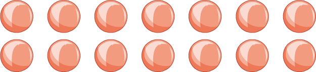
나눗셈식 24÷8=3을
곱셈식 8×3=24로 나타낼 수 있습니다.
곱셈식 8×3=24로 나타낼 수 있습니다.
장미 24송이를 한 명에게 4송이씩 주면
5명에게 나누어 줄 수 있습니다.
5명에게 나누어 줄 수 있습니다.
48÷6의 몫은
7단 곱셈구구를 이용하여 구합니다.
7단 곱셈구구를 이용하여 구합니다.
72÷8=9입니다.
색연필이 한 상자에 12자루씩 2개가 있으면 색연필은 모두 24자루입니다.
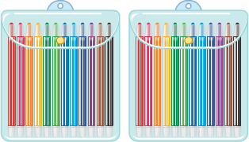
60+60+60=60×4입니다.
20×2의 계산 결과와 10×4의
계산 결과는 서로 같습니다.
계산 결과는 서로 같습니다.
22+22+22+22와 22×5를
계산하면 계산 결과가 같습니다.
계산하면 계산 결과가 같습니다.
우유가 한 상자에 32개씩 2상자 있습니다.
우유의 개수는 모두 64개입니다.
우유의 개수는 모두 64개입니다.
19+19+19+19+19+19+19=19×7입니다.
15씩 5번 뛰어 세면 65입니다.
한 장에 24개가 있는 붙임딱지가 5장이면 붙임딱지는 모두 120개입니다.
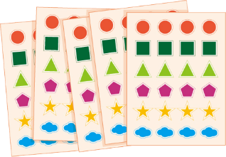
50×5의 계산 결과와 25×6의
계산 결과는 서로 같습니다.
계산 결과는 서로 같습니다.
20씩 6번 뛰어 세기 하는 것은
20 × 6과 다릅니다.
20 × 6과 다릅니다.
1 cm를 10칸으로 똑같이 나누었을 때
작은 눈금 한 칸의 길이를 1 mm이라고 씁니다.
작은 눈금 한 칸의 길이를 1 mm이라고 씁니다.
1000 m와 1 km는 같습니다.
3020 m는 3 km 200 m입니다.
초바늘이 시계를 반 바퀴 도는 데
걸리는 시간은 60초입니다.
걸리는 시간은 60초입니다.
100초는 1분 40초와 같습니다.
크레파스의 길이는 약 10 mm입니다.
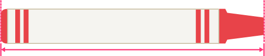
시계의 시각에서 30분 후는 10시 10분 38초입니다.
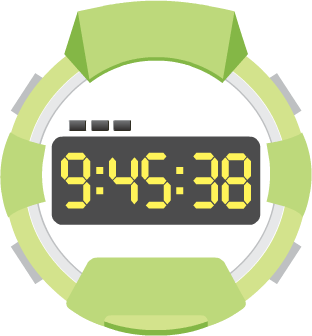
2분 30초는 150초와 같습니다.
200초보다 2분 50초가 더 긴 시간입니다.
도서관에서 우재네 집까지
20 km 57 m입니다.
20 km 57 m입니다.
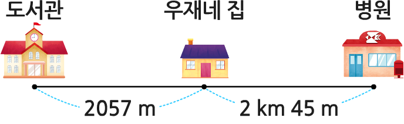
똑같이 나누어진 도형은 모두 4개입니다.
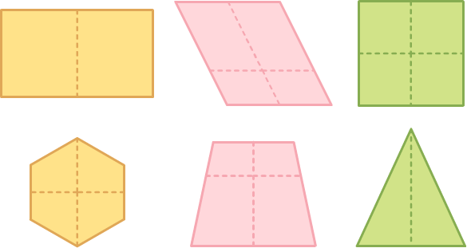
남은 부분은 전체의 입니다.
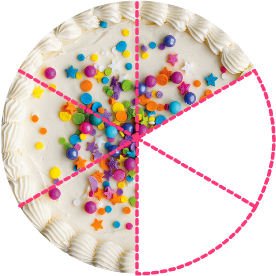
전체를 똑같이 5로 나눈 것 중의 2를
라 씁니다.
라 씁니다.
먹은 부분은 전체의 입니다.
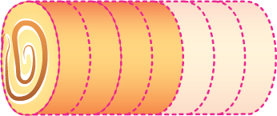
과 중에서 더 큰 수는 입니다.
0.1, 0.2, 0.3과 같은 수에서
‘.’을 소수라고 합니다.
‘.’을 소수라고 합니다.
9 cm보다 5 mm 더 긴 길이는
9.5 cm입니다.
9.5 cm입니다.
0. < 0.6에서 안에 들어갈 수 있는
수는 1, 2, 3, 4, 5입니다.
수는 1, 2, 3, 4, 5입니다.
0.1이 36개이면 3.6입니다.
8 cm 3 mm를 cm로 나타내면
8.3 cm입니다.
8.3 cm입니다.
1/10
정답
다음 문제
처음부터
친구들이 끝까지 잘 풀었어요.
모두 축하해 주세요.
모두 축하해 주세요.
다시 하기